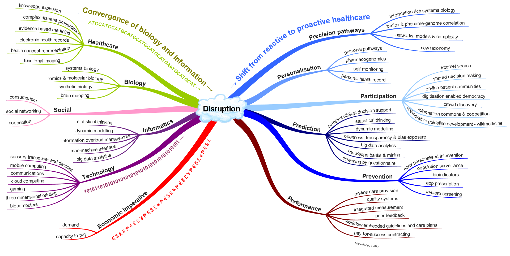

Foundation
FoundationFHIR Infrastructure  Work Group Work Group | Maturity Level: N/A | Standards Status: Informative |
FHIR предлагает не просто стандарт, решающий существующие проблемы с совместимостью, а целую платформу на будущее. Возможность взаимодействия - это больше о людях; для того, чтобы преодолеть пик завышенных ожиданий и перейти к стадии продуктивности (плато на кривой зрелости технологии ), необходимо иметь общее видение того, чего пытаются достичь. Здравоохранение находится сейчас в разгаре трансформации, обусловленной схождением в одной точке биологической и информационной револющий, а также экономическими императивами и социальными изменениями. Сила FHIR заключается в том, что он основан на реальном мире, который быстро меняется. Данное приложение предлагает высокоуровневое представление о текущем процессе разработки и помогает представить FHIR в более широком контексте.
Как Джон Сноу использовал ответвление информатики и геопространственной анализ для выявления источника холеры в Лондоне и таким образом доказал микробную теорию и произвел революцию в медицине в 1854 году, так и это приложение информатики и связанных технологий будет инструментом следующего большого изменения в здравоохранении.
В странах с продвинутой экономикой системы здравоохранения стоят перед всё возрастающим спросом стареющего населения и увеличивающимся охватом хронических заболеваний. Во многих этих странах также наблюдается нехватка квалифицированных работников. Сбор подтверждений указывает на ошибки, которых можно было бы избежать, являющиеся причиной серьезного вреда пациентам. В действительности оптимальный уход происходит только в половине случаев даже в самых эффективных системах здравоохранения (1). Небольших постепенных улучшений не достаточно для решения надвигающегося кризиса в устойчивом здравоохранении.
Схождение в одной точке направлений областей здравоохранения, биологии, информатики и технологии вместе с соответствующими социальными изменениями и экономическим императивом является движущей парадигмой (2), которая может быть ответом. Информатика играет важную роль в большинстве аспектов этого. На рисунке ниже представлена сводка сходимости этих тенденций и вероятных результатов преодоления разрыва, которые будут двигать нас от реактивного здравоохранения к проактивному.
С точки зрения нашего понимания физиологических направлений, информатика сейчас является главным инструментом молекулярной биологии. Например время, потраченное на вычисления, превышает химический анализ генной последовательности в 3 раза. Информатика используется для сопоставления нейронных сетей и построения моделей биологических систем (3) с постоянно возрастающим уровнем точности и сложности, которые не могут быть выполнены без помощи машин. Наше понимание так сильно изменилось в недалеком прошлом, что Американская академия наук в настоящее время утверждает, что пришло время для новой таксономии (4).
Персонализация происходит как из-за социальных изменений, так и возросшего уровня биологических знаний и облегчается дешевыми мобильными компьютерами, датчиками и устройствами. Эти социальные силы и высокоэффективные технологии разрешают более широкое участие "неспециалистов" в процессах принятия решений, лечения, открытия и управления знаниями.
Расширение знаний о том, как мы думаем (5), достижения в области информационных наук и повышение доступности вычислительной мощности означает, что наша способность приобретать знания и использовать их для прогнозирования отклонений резко возросла, и случилось это неожиданно, потому что взрыв информации не может иметь дело с иным. Эти новые возможности могут быть использованы для предоставления лучших рекомендаций и более эффективного предотвращения заболеваний путем обнаружения, мониторинга и лечения.
Сама система здравоохранения также может извлечь выгоду из того, что можно назвать второй фазой использования информационных технологий, путем предоставления он-лайн помощи, реального интегрированного измерения качества и интеграции знаний в рабочий процесс. С открытостью и прозрачностью появляется перспектива соконкуренции (сотрудничество между конкурирующими компаниями в областях, представляющих взаимный интерес), а с интегрированными мерами результатов в качестве экономического рычага может быть использовано заключение контрактов, которые оплачиваются за успех ( pay-for-success contracting).
Масштабное изменение в способе предоставления здравоохранения и необходимо, и неминуемо. Вполне вероятно, что это будет вытекать из слияния знаний и машин биологических и информационных революций, облегчающих переход от реактивного лечения к проактивной (упреждающей, профилактической) персонализированной медицине. Только такими значительными изменениями может быть достигнут необходимый объем улучшений в эффективности и действенности здравоохранения.
Развитие цифровых технологий привело к нарушению других секторов, особенно средств массовой информации, розничной продажи и производства, и сектор здравоохранения вряд ли останется иммунным (6). Дискретизация биологии и здоровья позволит машинам помогать, приведет к демистификации заболеваний, демократизации здравоохранения и переходу от лечения болезни к стимулированию и поддержанию хорошего здоровья.
Ссылки
Эта страница поддерживается Michael Legg
®© HL7.org 2011+. FHIR Release 4 (Technical Correction #1) (v4.0.1) generated on Thu, Jan 21, 2021 15:39+0000. QA Page
Links: Search |
Version History |
Table of Contents |
Credits |
Compare to R3 |
 |
Propose a change
|
Propose a change